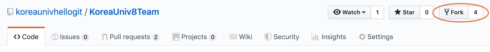
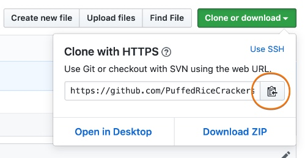

① git 의 핵심은 review 와 discussion
review 와 discussion을 가능한 작은 단위로 쪼개서 commit 하는게 바람직
(reject을 skip해서 마구잡이로 merge 되는 건 오픈소스에 맞는 느낌은 아님)
② 순서
1. 타인의 프로젝트 fork

2. clone

3. 파일수정
3.5. local git 로 가기
4. 수정 된 파일을 add
5. commit
6. push (pull request)
<최악의 상황>
pull request 했는데 남의 수정사항이 먼저 merge가 되버리면,
이 전 버전을 기준으로 나는 일을 하고 있었던 거라 문제가됨.
이럴 경우 fork 랑 clone 다시 하는게 아니라
base 를 갱신하는게 필요함 (즉 내가 했던 것은 보존을 하면서, 남의꺼를 가지고오려는)
그럼 rewind가 되고
base가 교체되고
내 버전이 올라가는 과정이 거치게 됨. 이 때 수정 사항이 반영되면 반영하고.
그럼 이후에 pull request를 할 수 있음
============================================================
git push origin develop(브랜치이름) -f (??)
remote가 항상 최소 2개
-upstate official한것
-local 컴퓨터에 있는거
-origin 본인깃저장소에 올라가있는 것
-(rebase까지 하면)
project 의 master 가 하나의 큰 줄기
branch 가 여기에 합치게 됨